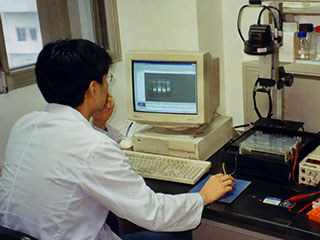
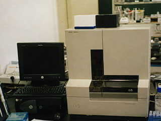

分子遗传研究室主要开展地方动植物遗传资源分析、品系鉴别和分子标记方法研究，围绕农作物及常见经济生物材料的遗传差异与连续繁育稳定性建立实验方法。
研究室收集的材料以五义及周边地区的小麦、豆类和地方经济植物为主，按来源、采集地点和繁育代次统一编号，并保存田间性状、种子特征和样品处理记录。实验工作包括核酸提取、聚合酶链式反应、琼脂糖凝胶电泳、RAPD标记和图谱比较。
 |  |
一、人员组成
本研究室现有科研和实验技术人员九名，其中研究员二人、副研究员一人、助理研究员二人。
| 沈克勤 | 研究员 | 研究室主任、植物分子遗传 |
| 周启明 | 研究员 | 遗传资源与遗传多样性 |
| 刘华 | 副研究员 | 遗传稳定性分析 |
| 李晓榕 | 助理研究员 | 组织培养 |
| 潘文静 | 助理研究员 | 遗传资料分析 |
二、研究工作
近年来重点比较不同组织、保存时间和提取方法对植物DNA质量的影响，改进适合本所条件的CTAB提取和扩增程序。在地方品系分析中，将田间性状和RAPD标记结果相互参照，用于材料初步分类、重复样品核对和混杂材料鉴别。
研究室同时观察连续繁育材料在不同代次中的主要性状和标记带型，对发生分离或混杂的材料重新取样复核。部分工作与五义市农业科学研究院合作进行，田间调查资料与实验图谱分别编号保存。
三、在研项目
WY-0007 北部丘陵作物品系遗传差异分析（2000—2002）
项目来源：五义市科技计划。对北部丘陵地区收集的作物材料开展田间性状登记、核酸提取、RAPD扩增和图谱比较，形成材料来源、繁育代次和实验处理的统一编号记录。
四、研究成果
1．简化CTAB法在作物种质分析中的应用（1998）
针对少量叶片和保存材料改进裂解、沉淀和洗涤步骤，降低多糖等杂质对扩增反应的影响，形成适用于常规品系比较的操作程序。
2．地方豆类材料遗传差异的初步比较（1999）
对来自清河、宁安和阜平的豆类材料进行性状登记与RAPD分析，初步划分若干差异类型，并核对部分同名异种材料。
3．不同保存条件对植物叶片DNA提取的影响（2000）
比较鲜样、低温保存和干燥保存材料的DNA产量及扩增稳定性，为外地采样和集中处理确定了适宜保存条件。
4．五义地方小麦品系RAPD标记分析（2001）
完成一批地方小麦材料的扩增和图谱整理，结合穗形、粒色等性状资料进行品系核对，研究结果编入年度工作报告。
| 版权所有:江河省科学院五义生物研究所 ©2001 Wuyi Institute of Biology, Jianghe Academy of Sciences |
| 网站信箱:webmaster@wyib.ac.cn | 联系电话：(0582)7361026 | 地址:江河省五义市义城区北郊科学路8号 946200 |
| 本网站为虚构故事互动作品，页面所涉机构、人物、报刊与文献均为虚构内容，请勿作为现实资料使用 |